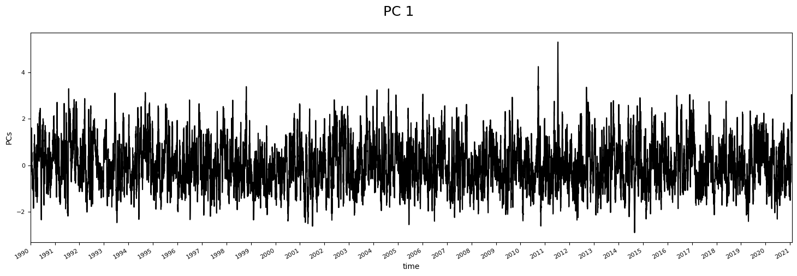
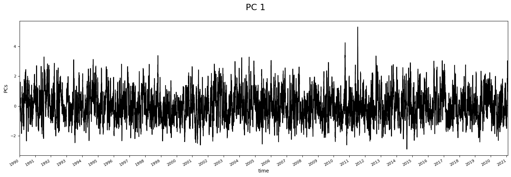

7. KNN regressor models¶
7.1. K-nearest-neighbors theory¶
The k-nearest neighbors algorithm, commonly known as \(k-NN\), is a non-parametric approach where the response of a data point is determined by the nature of its k-neighbors from the training set. It can be used in both classification and regression settings.
Tip
Remark: the higher the parameter k, the higher the bias, and the lower the parameter k, the higher the variance.
{kind=link}
Fig. 7.1 This picture shows the bias-variance trad-off with the knn regressor (image reference)¶
{kind=link}
# basics
import os, sys
import progressbar
# arrays
import numpy as np
import pandas as pd
import xarray as xr
# plotting
import matplotlib.pyplot as plt
import cartopy.crs as ccrs
# append sscode to path
sys.path.insert(0, os.path.join(os.path.abspath(''), '..'))
# custom
from sscode.config import data_path, default_evaluation_metrics
from sscode.data import Loader, load_moana_hindcast_ss, load_private_tgs
from sscode.pca import PCA_DynamicPred
from sscode.knn import KNN_Regression
from sscode.plotting.data import plot_uhslc_locations
from sscode.utils import calculate_relative_winds
# warnings
import warnings
warnings.filterwarnings('ignore')
# this is to allow plots to be centered
from IPython.core.display import HTML
HTML("""
<style>
.output_png {
display: table-cell;
text-align: center;
vertical-align: middle;
}
</style>
""")
7.2. Load the data (main + PCs)¶
loading data to use…
# load the data
load_cfsr_moana_uhslc = Loader(
data_to_load=['cfsr','moana','uhslc'],
load_predictor_files=(True,
[data_path+'/cfsr/CFSR_MSLP_daily.nc',data_path+'/cfsr/CFSR_WINDs_daily.nc']
) # load previously calculated winds
)
loading previously saved atmospheric data...

loading and plotting the UHSLC tidal guages...


# load / calculate the pcs
if os.path.isfile('../data/cfsr/cfsr_regional_gradient_tl3_daily_pcs.nc'):
pcs_cfsr = xr.open_dataset(
'../data/cfsr/cfsr_regional_gradient_tl3_daily_pcs.nc'
)
# from sscode.plotting.pca import plot_pcs
# plot_pcs(pcs_cfsr,n_plot=1)
else:
# calculate the pcs
pcs_cfsr, pcs_scaler = PCA_DynamicPred(
load_cfsr_moana_uhslc.predictor_slp,
calculate_gradient=True,
pca_plot=(True,False,2)
)
7.3. KNN regression with regional predictor¶
In the following cell, a knn regression is performed over all the domain of the Moana v2 hindcast nearshore, having the regional pcs (slp + gradient) as the predictor. Moreover, we plot the obtained results, which are also saved in our data/statistics folder, with the name stats_knn_regional_daily.nc.
Note
As it can be seen in the results plot, the different shores in New Zealand show very different results
This is a snippet of the model outlook:
# perform the knn regression
neigh = KNeighborsRegressor() # TODO: add params
# specify parameters to test
param_grid = {
'n_neighbors': np.arange(1,k_neighbors,5),
'weights': ['uniform', 'distance'],
'algorithm': ['auto', 'ball_tree', 'kd_tree', 'brute']
}
# use gridsearch to test all values for n_neighbors
knn_gscv = GridSearchCV(
neigh, param_grid, cv=cv_folds,
scoring='explained_variance',
verbose=1
)
# TODO: add verbose and cv, DONE!!
# fit model to data
knn_gscv.fit(X, y) # input total data
prediction = knn_gscv.predict(X)
where the best number of neighbors is selected, cross-validating the training and testing sizes!!
run = False
if run:
# perform the KNN-regression (regional)
stats_regional = []
sites_regional = np.arange(
0,len(load_cfsr_moana_uhslc.predictand.site.values),1
)
for stat in progressbar.progressbar(sites_regional):
ss_moana = load_cfsr_moana_uhslc.predictand.sel(site=stat)\
.load().resample(time='1D').max()
stats_stat, model, train_times = KNN_Regression(
pcs_cfsr, ss_moana
) # pre-loaded pcs
stats_regional.append(list(stats_stat.values()))
station_metrics_regional = {}
for im,metric in enumerate(stats_stat.keys()):
station_metrics_regional[metric] = (('station'),np.array(stats_regional)[:,im])
station_metrics_regional['latitude'] = (
('station'),load_cfsr_moana_uhslc.predictand.sel(site=sites_regional).lat.values
)
station_metrics_regional['longitude'] = (
('station'),load_cfsr_moana_uhslc.predictand.sel(site=sites_regional).lon.values
)
# save the statistics
stats_regional = xr.Dataset(
station_metrics_regional,coords={'station':sites_regional}
)
# local copy
if False:
stats_regional.to_netcdf(
data_path+'/statistics/models/stats_knn_regional_daily_new.nc')
else:
stats_regional = xr.open_dataset(
data_path+'/statistics/models/stats_knn_regional_daily.nc'
)
# plot results
if True:
from sscode.plotting.validation import plot_stats
plot_stats(stats_regional,plot_stats=['rel_rmse','pearson','ext_pearson'])

7.3.1. KNN regression in the UHSLC tidal gauges + validation¶
This part explanation is similar to the one available at MultiLinear regression models (models_linear.ipynb)!!
# plot the uhslc tidal-gauges locations
plot_uhslc_locations(load_cfsr_moana_uhslc.validator)

# validate model with tgs
stats = []
# select sites and append closest to UHSLC tgs
clos_to_uhslc = [689, 328, 393, 1327, 393, 480, 999, 116, 224, 1124, 949, 708]
sites_to_analyze = np.unique( # closest Moana v2 Hindcast to tidal gauges
[ 689,328,393,1327,393,480,999,116,224,1124,949,708, # UHSLC
1296,378,1124,780,613,488,1442,1217,578,200,1177,1025,689,949,224,1146, # LINZ
1174,1260,1217,744,1064,1214,803,999 # OTHER (ports...)
]
)
for istat,stat in enumerate(sites_to_analyze):
ss_moana = load_cfsr_moana_uhslc.predictand.sel(site=stat)\
.load().resample(time='1D').max()
# stats_stat, model, pcs_to_use = MultiLinear_Regression(
# pcs_cfsr, ss_moana, plot_results=True, verbose=True,
# validator=(
# True,load_cfsr_moana_uhslc.validator.isel(name=istat),'ss'
# )
# )
metrics, model, pcs_to_use = KNN_Regression(
PCA_DynamicPred(
load_cfsr_moana_uhslc.predictor_slp,
calculate_gradient=True, time_lapse=3,
region=(True, (
ss_moana.lon.values[0]-2.5,
ss_moana.lon.values[0]+2.5,
ss_moana.lat.values[0]-2.5,
ss_moana.lat.values[0]+2.5
)), winds=(True, calculate_relative_winds(
location=(ss_moana.lon.values[0],ss_moana.lat.values[0]),
uw=load_cfsr_moana_uhslc.predictor_wind.U_GRD_L103.load().sel({
'lon':slice(ss_moana.lon.values[0]-2.5,ss_moana.lon.values[0]+2.5),
'lat':slice(ss_moana.lat.values[0]-2.5,ss_moana.lat.values[0]+2.5)
}),
vw=load_cfsr_moana_uhslc.predictor_wind.V_GRD_L103.load().sel({
'lon':slice(ss_moana.lon.values[0]-2.5,ss_moana.lon.values[0]+2.5),
'lat':slice(ss_moana.lat.values[0]-2.5,ss_moana.lat.values[0]+2.5)
})
)), pca_plot=(True,False,2), verbose=False,
pca_ttls=['SLP in t','Grad in t','Winds in t',
'SLP in t-1','Grad in t-1','Winds in t-1',
'SLP in t-2','Grad in t-2','Winds in t-2']
)[0],
ss_moana, percentage_PCs=0.98, plot_results=True, verbose=False,
model_metrics=default_evaluation_metrics, train_size=0.7,
k_neighbors=2
)
re-chunking dataset to avoid memmory problems...
<xarray.Dataset>
Dimensions: (time: 11444, lat: 16, lon: 16)
Coordinates:
* time (time) datetime64[ns] 1990-01-01 1990-01-02 ... 2021-05-01
* lat (lat) float64 -48.86 -48.55 -48.24 ... -44.8 -44.49 -44.18
* lon (lon) float64 165.9 166.2 166.6 166.9 ... 170.0 170.3 170.6
Data variables:
U_GRD_L103 (time, lat, lon) float32 dask.array<chunksize=(572, 1, 1), meta=np.ndarray>
V_GRD_L103 (time, lat, lon) float32 dask.array<chunksize=(572, 1, 1), meta=np.ndarray>
wind_magnitude (time, lat, lon) float32 dask.array<chunksize=(572, 1, 1), meta=np.ndarray>
wind_proj (time, lat, lon) float64 -5.6 -5.944 ... -0.4466 -0.03221
bearings (lat, lon) float64 36.77 32.96 28.83 ... 204.8 208.8 212.4
direc_proj_math (lat, lon) float64 0.929 0.9955 1.068 ... -2.073 -2.136
wind_proj_mask (time, lat, lon) float64 -5.6 -5.944 -6.154 ... nan nan nan
 



re-chunking dataset to avoid memmory problems...
<xarray.Dataset>
Dimensions: (time: 11444, lat: 16, lon: 16)
Coordinates:
* time (time) datetime64[ns] 1990-01-01 1990-01-02 ... 2021-05-01
* lat (lat) float64 -48.55 -48.24 -47.93 ... -44.49 -44.18 -43.87
* lon (lon) float64 164.1 164.4 164.7 165.0 ... 168.1 168.4 168.8
Data variables:
U_GRD_L103 (time, lat, lon) float32 dask.array<chunksize=(572, 1, 1), meta=np.ndarray>
V_GRD_L103 (time, lat, lon) float32 dask.array<chunksize=(572, 1, 1), meta=np.ndarray>
wind_magnitude (time, lat, lon) float32 dask.array<chunksize=(572, 1, 1), meta=np.ndarray>
wind_proj (time, lat, lon) float64 -5.696 -6.028 ... -1.927 -1.111
bearings (lat, lon) float64 35.01 31.39 27.5 ... 206.5 210.7 214.6
direc_proj_math (lat, lon) float64 0.9598 1.023 1.091 ... -2.107 -2.175
wind_proj_mask (time, lat, lon) float64 -5.696 -6.028 ... -1.927 -1.111


re-chunking dataset to avoid memmory problems...
<xarray.Dataset>
Dimensions: (time: 11444, lat: 16, lon: 16)
Coordinates:
* time (time) datetime64[ns] 1990-01-01 1990-01-02 ... 2021-05-01
* lat (lat) float64 -48.24 -47.93 -47.61 ... -44.18 -43.87 -43.56
* lon (lon) float64 168.4 168.8 169.1 169.4 ... 172.5 172.8 173.1
Data variables:
U_GRD_L103 (time, lat, lon) float32 dask.array<chunksize=(572, 1, 1), meta=np.ndarray>
V_GRD_L103 (time, lat, lon) float32 dask.array<chunksize=(572, 1, 1), meta=np.ndarray>
wind_magnitude (time, lat, lon) float32 dask.array<chunksize=(572, 1, 1), meta=np.ndarray>
wind_proj (time, lat, lon) float64 -3.221 -3.024 ... -1.608 -3.347
bearings (lat, lon) float64 34.14 30.35 26.27 ... 208.0 212.0 215.7
direc_proj_math (lat, lon) float64 0.975 1.041 1.112 ... -2.129 -2.194
wind_proj_mask (time, lat, lon) float64 -3.221 -3.024 -2.89 ... nan -3.347


re-chunking dataset to avoid memmory problems...
<xarray.Dataset>
Dimensions: (time: 11444, lat: 16, lon: 16)
Coordinates:
* time (time) datetime64[ns] 1990-01-01 1990-01-02 ... 2021-05-01
* lat (lat) float64 -46.68 -46.37 -46.05 ... -42.62 -42.31 -41.99
* lon (lon) float64 169.1 169.4 169.7 170.0 ... 173.1 173.4 173.8
Data variables:
U_GRD_L103 (time, lat, lon) float32 dask.array<chunksize=(572, 1, 1), meta=np.ndarray>
V_GRD_L103 (time, lat, lon) float32 dask.array<chunksize=(572, 1, 1), meta=np.ndarray>
wind_magnitude (time, lat, lon) float32 dask.array<chunksize=(572, 1, 1), meta=np.ndarray>
wind_proj (time, lat, lon) float64 -0.8931 -0.8115 ... -1.857 -2.992
bearings (lat, lon) float64 34.99 31.0 26.69 ... 208.6 212.5 216.1
direc_proj_math (lat, lon) float64 0.9602 1.03 1.105 ... -2.139 -2.201
wind_proj_mask (time, lat, lon) float64 -0.8931 -0.8115 -1.003 ... nan nan


re-chunking dataset to avoid memmory problems...
<xarray.Dataset>
Dimensions: (time: 11444, lat: 16, lon: 16)
Coordinates:
* time (time) datetime64[ns] 1990-01-01 1990-01-02 ... 2021-05-01
* lat (lat) float64 -46.37 -46.05 -45.74 ... -42.31 -41.99 -41.68
* lon (lon) float64 181.2 181.6 181.9 182.2 ... 185.3 185.6 185.9
Data variables:
U_GRD_L103 (time, lat, lon) float32 dask.array<chunksize=(572, 1, 1), meta=np.ndarray>
V_GRD_L103 (time, lat, lon) float32 dask.array<chunksize=(572, 1, 1), meta=np.ndarray>
wind_magnitude (time, lat, lon) float32 dask.array<chunksize=(572, 1, 1), meta=np.ndarray>
wind_proj (time, lat, lon) float64 6.871 6.809 6.649 ... -12.74 -12.6
bearings (lat, lon) float64 36.44 32.63 28.49 ... 207.2 211.3 215.1
direc_proj_math (lat, lon) float64 0.9347 1.001 1.074 ... -2.117 -2.183
wind_proj_mask (time, lat, lon) float64 6.871 6.809 6.649 ... -12.74 -12.6


re-chunking dataset to avoid memmory problems...
<xarray.Dataset>
Dimensions: (time: 11444, lat: 16, lon: 16)
Coordinates:
* time (time) datetime64[ns] 1990-01-01 1990-01-02 ... 2021-05-01
* lat (lat) float64 -46.37 -46.05 -45.74 ... -42.31 -41.99 -41.68
* lon (lon) float64 166.2 166.6 166.9 167.2 ... 170.3 170.6 170.9
Data variables:
U_GRD_L103 (time, lat, lon) float32 dask.array<chunksize=(572, 1, 1), meta=np.ndarray>
V_GRD_L103 (time, lat, lon) float32 dask.array<chunksize=(572, 1, 1), meta=np.ndarray>
wind_magnitude (time, lat, lon) float32 dask.array<chunksize=(572, 1, 1), meta=np.ndarray>
wind_proj (time, lat, lon) float64 -6.362 -5.094 ... -3.004 -2.215
bearings (lat, lon) float64 34.86 31.05 26.93 ... 208.9 213.0 216.8
direc_proj_math (lat, lon) float64 0.9624 1.029 1.101 ... -2.147 -2.213
wind_proj_mask (time, lat, lon) float64 -6.362 -5.094 ... -3.004 -2.215


re-chunking dataset to avoid memmory problems...
<xarray.Dataset>
Dimensions: (time: 11444, lat: 16, lon: 16)
Coordinates:
* time (time) datetime64[ns] 1990-01-01 1990-01-02 ... 2021-05-01
* lat (lat) float64 -46.05 -45.74 -45.43 ... -41.99 -41.68 -41.37
* lon (lon) float64 170.6 170.9 171.2 171.6 ... 174.7 175.0 175.3
Data variables:
U_GRD_L103 (time, lat, lon) float32 dask.array<chunksize=(572, 1, 1), meta=np.ndarray>
V_GRD_L103 (time, lat, lon) float32 dask.array<chunksize=(572, 1, 1), meta=np.ndarray>
wind_magnitude (time, lat, lon) float32 dask.array<chunksize=(572, 1, 1), meta=np.ndarray>
wind_proj (time, lat, lon) float64 -3.571 -4.578 ... -6.387 -5.656
bearings (lat, lon) float64 32.88 28.94 24.71 ... 211.4 215.4 219.0
direc_proj_math (lat, lon) float64 0.997 1.066 1.139 ... -2.189 -2.252
wind_proj_mask (time, lat, lon) float64 -3.571 -4.578 ... -6.387 -5.656


re-chunking dataset to avoid memmory problems...
<xarray.Dataset>
Dimensions: (time: 11444, lat: 16, lon: 16)
Coordinates:
* time (time) datetime64[ns] 1990-01-01 1990-01-02 ... 2021-05-01
* lat (lat) float64 -45.74 -45.43 -45.12 ... -41.68 -41.37 -41.06
* lon (lon) float64 170.3 170.6 170.9 171.2 ... 174.4 174.7 175.0
Data variables:
U_GRD_L103 (time, lat, lon) float32 dask.array<chunksize=(572, 1, 1), meta=np.ndarray>
V_GRD_L103 (time, lat, lon) float32 dask.array<chunksize=(572, 1, 1), meta=np.ndarray>
wind_magnitude (time, lat, lon) float32 dask.array<chunksize=(572, 1, 1), meta=np.ndarray>
wind_proj (time, lat, lon) float64 -2.063 -3.21 ... -5.095 -4.455
bearings (lat, lon) float64 38.51 34.69 30.51 ... 205.7 209.8 213.6
direc_proj_math (lat, lon) float64 0.8987 0.9654 1.038 ... -2.091 -2.157
wind_proj_mask (time, lat, lon) float64 -2.063 -3.21 ... -5.095 -4.455


re-chunking dataset to avoid memmory problems...
<xarray.Dataset>
Dimensions: (time: 11444, lat: 16, lon: 16)
Coordinates:
* time (time) datetime64[ns] 1990-01-01 1990-01-02 ... 2021-05-01
* lat (lat) float64 -44.8 -44.49 -44.18 ... -40.75 -40.43 -40.12
* lon (lon) float64 171.2 171.6 171.9 172.2 ... 175.3 175.6 175.9
Data variables:
U_GRD_L103 (time, lat, lon) float32 dask.array<chunksize=(572, 1, 1), meta=np.ndarray>
V_GRD_L103 (time, lat, lon) float32 dask.array<chunksize=(572, 1, 1), meta=np.ndarray>
wind_magnitude (time, lat, lon) float32 dask.array<chunksize=(572, 1, 1), meta=np.ndarray>
wind_proj (time, lat, lon) float64 -3.051 -3.587 ... -1.833 -2.122
bearings (lat, lon) float64 37.72 33.98 29.91 ... 207.0 211.3 215.2
direc_proj_math (lat, lon) float64 0.9124 0.9777 1.049 ... -2.117 -2.186
wind_proj_mask (time, lat, lon) float64 -3.051 -3.587 -3.789 ... nan nan


re-chunking dataset to avoid memmory problems...
<xarray.Dataset>
Dimensions: (time: 11444, lat: 16, lon: 16)
Coordinates:
* time (time) datetime64[ns] 1990-01-01 1990-01-02 ... 2021-05-01
* lat (lat) float64 -44.18 -43.87 -43.56 ... -40.12 -39.81 -39.5
* lon (lon) float64 169.1 169.4 169.7 170.0 ... 173.1 173.4 173.8
Data variables:
U_GRD_L103 (time, lat, lon) float32 dask.array<chunksize=(572, 1, 1), meta=np.ndarray>
V_GRD_L103 (time, lat, lon) float32 dask.array<chunksize=(572, 1, 1), meta=np.ndarray>
wind_magnitude (time, lat, lon) float32 dask.array<chunksize=(572, 1, 1), meta=np.ndarray>
wind_proj (time, lat, lon) float64 -1.991 -2.158 ... 0.4473 -0.06424
bearings (lat, lon) float64 37.65 33.74 29.46 ... 207.9 212.0 215.8
direc_proj_math (lat, lon) float64 0.9136 0.9819 1.057 ... -2.13 -2.196
wind_proj_mask (time, lat, lon) float64 nan nan nan ... 0.4473 -0.06424


re-chunking dataset to avoid memmory problems...
<xarray.Dataset>
Dimensions: (time: 11444, lat: 17, lon: 16)
Coordinates:
* time (time) datetime64[ns] 1990-01-01 1990-01-02 ... 2021-05-01
* lat (lat) float64 -43.87 -43.56 -43.24 ... -39.5 -39.18 -38.87
* lon (lon) float64 172.5 172.8 173.1 173.4 ... 176.6 176.9 177.2
Data variables:
U_GRD_L103 (time, lat, lon) float32 dask.array<chunksize=(572, 1, 1), meta=np.ndarray>
V_GRD_L103 (time, lat, lon) float32 dask.array<chunksize=(572, 1, 1), meta=np.ndarray>
wind_magnitude (time, lat, lon) float32 dask.array<chunksize=(572, 1, 1), meta=np.ndarray>
wind_proj (time, lat, lon) float64 -2.448 -2.89 ... -4.059 -5.185
bearings (lat, lon) float64 34.35 30.43 26.19 ... 208.4 212.3 215.9
direc_proj_math (lat, lon) float64 0.9712 1.04 1.114 ... -2.135 -2.198
wind_proj_mask (time, lat, lon) float64 -2.448 -2.89 -3.299 ... nan -5.185


re-chunking dataset to avoid memmory problems...
<xarray.Dataset>
Dimensions: (time: 11444, lat: 16, lon: 16)
Coordinates:
* time (time) datetime64[ns] 1990-01-01 1990-01-02 ... 2021-05-01
* lat (lat) float64 -43.56 -43.24 -42.93 ... -39.5 -39.18 -38.87
* lon (lon) float64 170.9 171.2 171.6 171.9 ... 175.0 175.3 175.6
Data variables:
U_GRD_L103 (time, lat, lon) float32 dask.array<chunksize=(572, 1, 1), meta=np.ndarray>
V_GRD_L103 (time, lat, lon) float32 dask.array<chunksize=(572, 1, 1), meta=np.ndarray>
wind_magnitude (time, lat, lon) float32 dask.array<chunksize=(572, 1, 1), meta=np.ndarray>
wind_proj (time, lat, lon) float64 -1.23 -1.52 ... -2.528 -2.011
bearings (lat, lon) float64 37.02 33.03 28.67 ... 209.1 213.2 216.9
direc_proj_math (lat, lon) float64 0.9247 0.9943 1.07 ... -2.15 -2.215
wind_proj_mask (time, lat, lon) float64 nan nan nan nan ... nan nan nan


re-chunking dataset to avoid memmory problems...
<xarray.Dataset>
Dimensions: (time: 11444, lat: 16, lon: 16)
Coordinates:
* time (time) datetime64[ns] 1990-01-01 1990-01-02 ... 2021-05-01
* lat (lat) float64 -43.24 -42.93 -42.62 ... -39.18 -38.87 -38.56
* lon (lon) float64 170.6 170.9 171.2 171.6 ... 174.7 175.0 175.3
Data variables:
U_GRD_L103 (time, lat, lon) float32 dask.array<chunksize=(572, 1, 1), meta=np.ndarray>
V_GRD_L103 (time, lat, lon) float32 dask.array<chunksize=(572, 1, 1), meta=np.ndarray>
wind_magnitude (time, lat, lon) float32 dask.array<chunksize=(572, 1, 1), meta=np.ndarray>
wind_proj (time, lat, lon) float64 -0.6124 -0.8636 ... -2.835 -2.351
bearings (lat, lon) float64 40.28 36.38 32.08 ... 206.1 210.3 214.1
direc_proj_math (lat, lon) float64 0.8677 0.9359 1.011 ... -2.099 -2.166
wind_proj_mask (time, lat, lon) float64 nan nan nan nan ... -3.288 nan nan


re-chunking dataset to avoid memmory problems...
<xarray.Dataset>
Dimensions: (time: 11444, lat: 16, lon: 16)
Coordinates:
* time (time) datetime64[ns] 1990-01-01 1990-01-02 ... 2021-05-01
* lat (lat) float64 -43.24 -42.93 -42.62 ... -39.18 -38.87 -38.56
* lon (lon) float64 174.1 174.4 174.7 175.0 ... 178.1 178.4 178.8
Data variables:
U_GRD_L103 (time, lat, lon) float32 dask.array<chunksize=(572, 1, 1), meta=np.ndarray>
V_GRD_L103 (time, lat, lon) float32 dask.array<chunksize=(572, 1, 1), meta=np.ndarray>
wind_magnitude (time, lat, lon) float32 dask.array<chunksize=(572, 1, 1), meta=np.ndarray>
wind_proj (time, lat, lon) float64 -3.964 -3.948 ... -10.41 -11.35
bearings (lat, lon) float64 35.77 31.67 27.19 ... 210.7 214.7 218.3
direc_proj_math (lat, lon) float64 0.9464 1.018 1.096 ... -2.177 -2.239
wind_proj_mask (time, lat, lon) float64 -3.964 -3.948 ... -10.41 -11.35


re-chunking dataset to avoid memmory problems...
<xarray.Dataset>
Dimensions: (time: 11444, lat: 16, lon: 16)
Coordinates:
* time (time) datetime64[ns] 1990-01-01 1990-01-02 ... 2021-05-01
* lat (lat) float64 -43.24 -42.93 -42.62 ... -39.18 -38.87 -38.56
* lon (lon) float64 170.6 170.9 171.2 171.6 ... 174.7 175.0 175.3
Data variables:
U_GRD_L103 (time, lat, lon) float32 dask.array<chunksize=(572, 1, 1), meta=np.ndarray>
V_GRD_L103 (time, lat, lon) float32 dask.array<chunksize=(572, 1, 1), meta=np.ndarray>
wind_magnitude (time, lat, lon) float32 dask.array<chunksize=(572, 1, 1), meta=np.ndarray>
wind_proj (time, lat, lon) float64 -0.8756 -1.19 ... -2.632 -2.198
bearings (lat, lon) float64 34.9 30.95 26.66 ... 211.6 215.7 219.5
direc_proj_math (lat, lon) float64 0.9616 1.031 1.106 ... -2.195 -2.26
wind_proj_mask (time, lat, lon) float64 nan nan nan nan ... -3.006 nan nan


re-chunking dataset to avoid memmory problems...
<xarray.Dataset>
Dimensions: (time: 11444, lat: 16, lon: 16)
Coordinates:
* time (time) datetime64[ns] 1990-01-01 1990-01-02 ... 2021-05-01
* lat (lat) float64 -41.68 -41.37 -41.06 ... -37.62 -37.31 -37.0
* lon (lon) float64 174.7 175.0 175.3 175.6 ... 178.8 179.1 179.4
Data variables:
U_GRD_L103 (time, lat, lon) float32 dask.array<chunksize=(572, 1, 1), meta=np.ndarray>
V_GRD_L103 (time, lat, lon) float32 dask.array<chunksize=(572, 1, 1), meta=np.ndarray>
wind_magnitude (time, lat, lon) float32 dask.array<chunksize=(572, 1, 1), meta=np.ndarray>
wind_proj (time, lat, lon) float64 -1.281 -1.196 ... -11.94 -11.61
bearings (lat, lon) float64 38.31 34.15 29.56 ... 209.5 213.5 217.1
direc_proj_math (lat, lon) float64 0.9021 0.9748 1.055 ... -2.155 -2.219
wind_proj_mask (time, lat, lon) float64 -1.281 -1.196 ... -11.94 -11.61


re-chunking dataset to avoid memmory problems...
<xarray.Dataset>
Dimensions: (time: 11444, lat: 16, lon: 16)
Coordinates:
* time (time) datetime64[ns] 1990-01-01 1990-01-02 ... 2021-05-01
* lat (lat) float64 -41.37 -41.06 -40.75 ... -37.31 -37.0 -36.69
* lon (lon) float64 171.6 171.9 172.2 172.5 ... 175.6 175.9 176.2
Data variables:
U_GRD_L103 (time, lat, lon) float32 dask.array<chunksize=(572, 1, 1), meta=np.ndarray>
V_GRD_L103 (time, lat, lon) float32 dask.array<chunksize=(572, 1, 1), meta=np.ndarray>
wind_magnitude (time, lat, lon) float32 dask.array<chunksize=(572, 1, 1), meta=np.ndarray>
wind_proj (time, lat, lon) float64 1.688 1.392 ... -2.833 -3.629
bearings (lat, lon) float64 39.8 35.96 31.75 ... 207.6 212.0 216.0
direc_proj_math (lat, lon) float64 0.8762 0.9432 1.017 ... -2.13 -2.199
wind_proj_mask (time, lat, lon) float64 1.688 1.392 ... -2.833 -3.629


re-chunking dataset to avoid memmory problems...
<xarray.Dataset>
Dimensions: (time: 11444, lat: 16, lon: 16)
Coordinates:
* time (time) datetime64[ns] 1990-01-01 1990-01-02 ... 2021-05-01
* lat (lat) float64 -41.06 -40.75 -40.43 ... -37.0 -36.69 -36.37
* lon (lon) float64 175.6 175.9 176.2 176.6 ... 179.7 180.0 180.3
Data variables:
U_GRD_L103 (time, lat, lon) float32 dask.array<chunksize=(572, 1, 1), meta=np.ndarray>
V_GRD_L103 (time, lat, lon) float32 dask.array<chunksize=(572, 1, 1), meta=np.ndarray>
wind_magnitude (time, lat, lon) float32 dask.array<chunksize=(572, 1, 1), meta=np.ndarray>
wind_proj (time, lat, lon) float64 -1.099 -1.467 ... -10.42 -10.07
bearings (lat, lon) float64 38.83 34.91 30.61 ... 209.0 213.3 217.2
direc_proj_math (lat, lon) float64 0.8931 0.9615 1.036 ... -2.152 -2.22
wind_proj_mask (time, lat, lon) float64 nan -1.467 ... -10.42 -10.07


re-chunking dataset to avoid memmory problems...
<xarray.Dataset>
Dimensions: (time: 11444, lat: 16, lon: 16)
Coordinates:
* time (time) datetime64[ns] 1990-01-01 1990-01-02 ... 2021-05-01
* lat (lat) float64 -40.43 -40.12 -39.81 ... -36.37 -36.06 -35.75
* lon (lon) float64 172.5 172.8 173.1 173.4 ... 176.6 176.9 177.2
Data variables:
U_GRD_L103 (time, lat, lon) float32 dask.array<chunksize=(572, 1, 1), meta=np.ndarray>
V_GRD_L103 (time, lat, lon) float32 dask.array<chunksize=(572, 1, 1), meta=np.ndarray>
wind_magnitude (time, lat, lon) float32 dask.array<chunksize=(572, 1, 1), meta=np.ndarray>
wind_proj (time, lat, lon) float64 2.774 1.355 ... -2.19 -0.7578
bearings (lat, lon) float64 36.86 32.79 28.34 ... 211.7 215.9 219.6
direc_proj_math (lat, lon) float64 0.9274 0.9985 1.076 ... -2.197 -2.262
wind_proj_mask (time, lat, lon) float64 2.774 1.355 ... -2.19 -0.7578


re-chunking dataset to avoid memmory problems...
<xarray.Dataset>
Dimensions: (time: 11444, lat: 16, lon: 16)
Coordinates:
* time (time) datetime64[ns] 1990-01-01 1990-01-02 ... 2021-05-01
* lat (lat) float64 -39.81 -39.5 -39.18 ... -35.75 -35.44 -35.13
* lon (lon) float64 173.8 174.1 174.4 174.7 ... 177.8 178.1 178.4
Data variables:
U_GRD_L103 (time, lat, lon) float32 dask.array<chunksize=(572, 1, 1), meta=np.ndarray>
V_GRD_L103 (time, lat, lon) float32 dask.array<chunksize=(572, 1, 1), meta=np.ndarray>
wind_magnitude (time, lat, lon) float32 dask.array<chunksize=(572, 1, 1), meta=np.ndarray>
wind_proj (time, lat, lon) float64 2.262 1.914 ... -4.106 -4.527
bearings (lat, lon) float64 41.84 37.92 33.57 ... 207.1 211.3 215.2
direc_proj_math (lat, lon) float64 0.8406 0.909 0.9849 ... -2.118 -2.186
wind_proj_mask (time, lat, lon) float64 2.262 1.914 ... -4.106 -4.527


re-chunking dataset to avoid memmory problems...
<xarray.Dataset>
Dimensions: (time: 11444, lat: 16, lon: 16)
Coordinates:
* time (time) datetime64[ns] 1990-01-01 1990-01-02 ... 2021-05-01
* lat (lat) float64 -39.81 -39.5 -39.18 ... -35.75 -35.44 -35.13
* lon (lon) float64 175.9 176.2 176.6 176.9 ... 180.0 180.3 180.6
Data variables:
U_GRD_L103 (time, lat, lon) float32 dask.array<chunksize=(572, 1, 1), meta=np.ndarray>
V_GRD_L103 (time, lat, lon) float32 dask.array<chunksize=(572, 1, 1), meta=np.ndarray>
wind_magnitude (time, lat, lon) float32 dask.array<chunksize=(572, 1, 1), meta=np.ndarray>
wind_proj (time, lat, lon) float64 -0.3179 -0.9219 ... -7.121 -6.871
bearings (lat, lon) float64 37.53 33.32 28.7 ... 211.6 215.6 219.3
direc_proj_math (lat, lon) float64 0.9159 0.9892 1.07 ... -2.192 -2.256
wind_proj_mask (time, lat, lon) float64 nan nan nan ... -7.121 -6.871


re-chunking dataset to avoid memmory problems...
<xarray.Dataset>
Dimensions: (time: 11444, lat: 16, lon: 16)
Coordinates:
* time (time) datetime64[ns] 1990-01-01 1990-01-02 ... 2021-05-01
* lat (lat) float64 -39.5 -39.18 -38.87 ... -35.44 -35.13 -34.81
* lon (lon) float64 173.1 173.4 173.8 174.1 ... 177.2 177.5 177.8
Data variables:
U_GRD_L103 (time, lat, lon) float32 dask.array<chunksize=(572, 1, 1), meta=np.ndarray>
V_GRD_L103 (time, lat, lon) float32 dask.array<chunksize=(572, 1, 1), meta=np.ndarray>
wind_magnitude (time, lat, lon) float32 dask.array<chunksize=(572, 1, 1), meta=np.ndarray>
wind_proj (time, lat, lon) float64 2.97 2.649 2.095 ... -5.504 -4.625
bearings (lat, lon) float64 38.66 34.69 30.32 ... 210.4 214.7 218.6
direc_proj_math (lat, lon) float64 0.896 0.9654 1.042 ... -2.176 -2.244
wind_proj_mask (time, lat, lon) float64 2.97 2.649 2.095 ... -5.504 -4.625


re-chunking dataset to avoid memmory problems...
<xarray.Dataset>
Dimensions: (time: 11444, lat: 16, lon: 16)
Coordinates:
* time (time) datetime64[ns] 1990-01-01 1990-01-02 ... 2021-05-01
* lat (lat) float64 -39.5 -39.18 -38.87 ... -35.44 -35.13 -34.81
* lon (lon) float64 172.2 172.5 172.8 173.1 ... 176.2 176.6 176.9
Data variables:
U_GRD_L103 (time, lat, lon) float32 dask.array<chunksize=(572, 1, 1), meta=np.ndarray>
V_GRD_L103 (time, lat, lon) float32 dask.array<chunksize=(572, 1, 1), meta=np.ndarray>
wind_magnitude (time, lat, lon) float32 dask.array<chunksize=(572, 1, 1), meta=np.ndarray>
wind_proj (time, lat, lon) float64 2.035 2.629 2.761 ... -7.07 -6.455
bearings (lat, lon) float64 37.75 33.76 29.4 ... 211.4 215.7 219.5
direc_proj_math (lat, lon) float64 0.912 0.9815 1.058 ... -2.193 -2.26
wind_proj_mask (time, lat, lon) float64 2.035 2.629 2.761 ... -7.07 -6.455


re-chunking dataset to avoid memmory problems...
<xarray.Dataset>
Dimensions: (time: 11444, lat: 16, lon: 16)
Coordinates:
* time (time) datetime64[ns] 1990-01-01 1990-01-02 ... 2021-05-01
* lat (lat) float64 -39.18 -38.87 -38.56 ... -35.13 -34.81 -34.5
* lon (lon) float64 173.4 173.8 174.1 174.4 ... 177.5 177.8 178.1
Data variables:
U_GRD_L103 (time, lat, lon) float32 dask.array<chunksize=(572, 1, 1), meta=np.ndarray>
V_GRD_L103 (time, lat, lon) float32 dask.array<chunksize=(572, 1, 1), meta=np.ndarray>
wind_magnitude (time, lat, lon) float32 dask.array<chunksize=(572, 1, 1), meta=np.ndarray>
wind_proj (time, lat, lon) float64 3.009 2.603 ... -6.764 -6.151
bearings (lat, lon) float64 39.62 35.69 31.37 ... 209.5 213.9 217.8
direc_proj_math (lat, lon) float64 0.8794 0.9479 1.023 ... -2.162 -2.231
wind_proj_mask (time, lat, lon) float64 3.009 2.603 nan ... -6.764 -6.151


re-chunking dataset to avoid memmory problems...
<xarray.Dataset>
Dimensions: (time: 11444, lat: 16, lon: 16)
Coordinates:
* time (time) datetime64[ns] 1990-01-01 1990-01-02 ... 2021-05-01
* lat (lat) float64 -39.18 -38.87 -38.56 ... -35.13 -34.81 -34.5
* lon (lon) float64 172.5 172.8 173.1 173.4 ... 176.6 176.9 177.2
Data variables:
U_GRD_L103 (time, lat, lon) float32 dask.array<chunksize=(572, 1, 1), meta=np.ndarray>
V_GRD_L103 (time, lat, lon) float32 dask.array<chunksize=(572, 1, 1), meta=np.ndarray>
wind_magnitude (time, lat, lon) float32 dask.array<chunksize=(572, 1, 1), meta=np.ndarray>
wind_proj (time, lat, lon) float64 2.033 2.63 2.963 ... -7.564 -7.118
bearings (lat, lon) float64 37.96 33.95 29.55 ... 211.4 215.7 219.5
direc_proj_math (lat, lon) float64 0.9082 0.9783 1.055 ... -2.193 -2.26
wind_proj_mask (time, lat, lon) float64 2.033 2.63 2.963 ... -7.564 -7.118


re-chunking dataset to avoid memmory problems...
<xarray.Dataset>
Dimensions: (time: 11444, lat: 16, lon: 16)
Coordinates:
* time (time) datetime64[ns] 1990-01-01 1990-01-02 ... 2021-05-01
* lat (lat) float64 -38.87 -38.56 -38.25 ... -34.81 -34.5 -34.19
* lon (lon) float64 171.9 172.2 172.5 172.8 ... 175.9 176.2 176.6
Data variables:
U_GRD_L103 (time, lat, lon) float32 dask.array<chunksize=(572, 1, 1), meta=np.ndarray>
V_GRD_L103 (time, lat, lon) float32 dask.array<chunksize=(572, 1, 1), meta=np.ndarray>
wind_magnitude (time, lat, lon) float32 dask.array<chunksize=(572, 1, 1), meta=np.ndarray>
wind_proj (time, lat, lon) float64 0.2199 0.9384 ... -7.121 -7.174
bearings (lat, lon) float64 36.49 32.36 27.86 ... 213.3 217.4 221.1
direc_proj_math (lat, lon) float64 0.934 1.006 1.085 ... -2.224 -2.289
wind_proj_mask (time, lat, lon) float64 0.2199 0.9384 ... -7.121 -7.174


re-chunking dataset to avoid memmory problems...
<xarray.Dataset>
Dimensions: (time: 11444, lat: 16, lon: 16)
Coordinates:
* time (time) datetime64[ns] 1990-01-01 1990-01-02 ... 2021-05-01
* lat (lat) float64 -38.56 -38.25 -37.94 ... -34.5 -34.19 -33.88
* lon (lon) float64 173.1 173.4 173.8 174.1 ... 177.2 177.5 177.8
Data variables:
U_GRD_L103 (time, lat, lon) float32 dask.array<chunksize=(572, 1, 1), meta=np.ndarray>
V_GRD_L103 (time, lat, lon) float32 dask.array<chunksize=(572, 1, 1), meta=np.ndarray>
wind_magnitude (time, lat, lon) float32 dask.array<chunksize=(572, 1, 1), meta=np.ndarray>
wind_proj (time, lat, lon) float64 2.993 3.647 ... -7.708 -7.707
bearings (lat, lon) float64 39.82 35.9 31.59 ... 209.7 214.1 218.1
direc_proj_math (lat, lon) float64 0.8758 0.9442 1.019 ... -2.166 -2.235
wind_proj_mask (time, lat, lon) float64 2.993 3.647 ... -7.708 -7.707


re-chunking dataset to avoid memmory problems...
<xarray.Dataset>
Dimensions: (time: 11444, lat: 16, lon: 16)
Coordinates:
* time (time) datetime64[ns] 1990-01-01 1990-01-02 ... 2021-05-01
* lat (lat) float64 -38.25 -37.94 -37.62 ... -34.19 -33.88 -33.56
* lon (lon) float64 172.2 172.5 172.8 173.1 ... 176.2 176.6 176.9
Data variables:
U_GRD_L103 (time, lat, lon) float32 dask.array<chunksize=(572, 1, 1), meta=np.ndarray>
V_GRD_L103 (time, lat, lon) float32 dask.array<chunksize=(572, 1, 1), meta=np.ndarray>
wind_magnitude (time, lat, lon) float32 dask.array<chunksize=(572, 1, 1), meta=np.ndarray>
wind_proj (time, lat, lon) float64 0.5839 1.389 ... -6.384 -6.314
bearings (lat, lon) float64 39.03 34.99 30.54 ... 210.9 215.2 219.1
direc_proj_math (lat, lon) float64 0.8895 0.9601 1.038 ... -2.185 -2.252
wind_proj_mask (time, lat, lon) float64 0.5839 1.389 ... -6.384 -6.314


re-chunking dataset to avoid memmory problems...
<xarray.Dataset>
Dimensions: (time: 11444, lat: 16, lon: 16)
Coordinates:
* time (time) datetime64[ns] 1990-01-01 1990-01-02 ... 2021-05-01
* lat (lat) float64 -36.69 -36.37 -36.06 ... -32.63 -32.32 -32.0
* lon (lon) float64 170.6 170.9 171.2 171.6 ... 174.7 175.0 175.3
Data variables:
U_GRD_L103 (time, lat, lon) float32 dask.array<chunksize=(572, 1, 1), meta=np.ndarray>
V_GRD_L103 (time, lat, lon) float32 dask.array<chunksize=(572, 1, 1), meta=np.ndarray>
wind_magnitude (time, lat, lon) float32 dask.array<chunksize=(572, 1, 1), meta=np.ndarray>
wind_proj (time, lat, lon) float64 -1.569 -1.169 ... -4.493 -4.347
bearings (lat, lon) float64 41.73 37.79 33.41 ... 209.1 213.5 217.5
direc_proj_math (lat, lon) float64 0.8425 0.9113 0.9876 ... -2.155 -2.225
wind_proj_mask (time, lat, lon) float64 -1.569 -1.169 ... -4.493 -4.347


7.3.2. Check KNN reconstructions¶
Now, we visualize how the knn algorithm works in the prediction task…
Warning
TODO: add explanations!!
# import custom plotting variables
from sscode.config import default_location, default_region
from sscode.plotting.config import _figsize
from sscode.plotting.utils import plot_ccrs_nz
# find similarities between real and kneighbors
n_times = 2 # number of validations/plots
k_neighbors = 1 # number of neighbors to search
# plotting fig and axes
for time in np.random.randint(0,len(train_times),n_times):
fig, axes = plt.subplots(
ncols=3,figsize=_figsize,
subplot_kw={
'projection':ccrs.PlateCarree(
central_longitude=default_location[0]
)
}
)
real = load_cfsr_moana_uhslc.predictor_slp.isel(time=time)
real.plot(
cmap='bwr',vmin=101300-2000,vmax=101300+2000,ax=axes[0],
transform=ccrs.PlateCarree()
)
predicted = load_cfsr_moana_uhslc.predictor_slp.isel(
time=model.kneighbors(
pcs_cfsr.isel(time=time).PCs[:388].values.reshape(1,-1),
# TODO: edit pcs limit above if error is raised!!
k_neighbors
)[1][0]
).mean(dim='time')
predicted.plot(
cmap='bwr',vmin=101300-2000,vmax=101300+2000,ax=axes[1],
transform=ccrs.PlateCarree()
)
(real-predicted).plot(
cmap='bwr',vmin=-2000,vmax=+2000,ax=axes[2],
transform=ccrs.PlateCarree()
)
axes[1].set_title('Predicted SLP - k_neigh = {}'.format(k_neighbors))
axes[2].set_title('SLP difference in [mbar·100]')
plot_ccrs_nz(axes,plot_region=(True,default_region),plot_land=False,
plot_labels=(False,None,None))
---------------------------------------------------------------------------
ValueError Traceback (most recent call last)
<ipython-input-8-5ae14d6412ea> in <module>
23 )
24 predicted = load_cfsr_moana_uhslc.predictor_slp.isel(
---> 25 time=model.kneighbors(
26 pcs_cfsr.isel(time=time).PCs[:388].values.reshape(1,-1),
27 # TODO: edit pcs limit above if error is raised!!
~/miniconda3/envs/ssnz/lib/python3.8/site-packages/sklearn/neighbors/_base.py in kneighbors(self, X, n_neighbors, return_distance)
703 kwds = self.effective_metric_params_
704
--> 705 chunked_results = list(pairwise_distances_chunked(
706 X, self._fit_X, reduce_func=reduce_func,
707 metric=self.effective_metric_, n_jobs=n_jobs,
~/miniconda3/envs/ssnz/lib/python3.8/site-packages/sklearn/metrics/pairwise.py in pairwise_distances_chunked(X, Y, reduce_func, metric, n_jobs, working_memory, **kwds)
1621 else:
1622 X_chunk = X[sl]
-> 1623 D_chunk = pairwise_distances(X_chunk, Y, metric=metric,
1624 n_jobs=n_jobs, **kwds)
1625 if ((X is Y or Y is None)
~/miniconda3/envs/ssnz/lib/python3.8/site-packages/sklearn/utils/validation.py in inner_f(*args, **kwargs)
61 extra_args = len(args) - len(all_args)
62 if extra_args <= 0:
---> 63 return f(*args, **kwargs)
64
65 # extra_args > 0
~/miniconda3/envs/ssnz/lib/python3.8/site-packages/sklearn/metrics/pairwise.py in pairwise_distances(X, Y, metric, n_jobs, force_all_finite, **kwds)
1788 func = partial(distance.cdist, metric=metric, **kwds)
1789
-> 1790 return _parallel_pairwise(X, Y, func, n_jobs, **kwds)
1791
1792
~/miniconda3/envs/ssnz/lib/python3.8/site-packages/sklearn/metrics/pairwise.py in _parallel_pairwise(X, Y, func, n_jobs, **kwds)
1357
1358 if effective_n_jobs(n_jobs) == 1:
-> 1359 return func(X, Y, **kwds)
1360
1361 # enforce a threading backend to prevent data communication overhead
~/miniconda3/envs/ssnz/lib/python3.8/site-packages/sklearn/utils/validation.py in inner_f(*args, **kwargs)
61 extra_args = len(args) - len(all_args)
62 if extra_args <= 0:
---> 63 return f(*args, **kwargs)
64
65 # extra_args > 0
~/miniconda3/envs/ssnz/lib/python3.8/site-packages/sklearn/metrics/pairwise.py in euclidean_distances(X, Y, Y_norm_squared, squared, X_norm_squared)
270 [1.41421356]])
271 """
--> 272 X, Y = check_pairwise_arrays(X, Y)
273
274 # If norms are passed as float32, they are unused. If arrays are passed as
~/miniconda3/envs/ssnz/lib/python3.8/site-packages/sklearn/utils/validation.py in inner_f(*args, **kwargs)
61 extra_args = len(args) - len(all_args)
62 if extra_args <= 0:
---> 63 return f(*args, **kwargs)
64
65 # extra_args > 0
~/miniconda3/envs/ssnz/lib/python3.8/site-packages/sklearn/metrics/pairwise.py in check_pairwise_arrays(X, Y, precomputed, dtype, accept_sparse, force_all_finite, copy)
158 (X.shape[0], X.shape[1], Y.shape[0]))
159 elif X.shape[1] != Y.shape[1]:
--> 160 raise ValueError("Incompatible dimension for X and Y matrices: "
161 "X.shape[1] == %d while Y.shape[1] == %d" % (
162 X.shape[1], Y.shape[1]))
ValueError: Incompatible dimension for X and Y matrices: X.shape[1] == 388 while Y.shape[1] == 89
7.3.3. knn regression - Ana’s paper¶
In the two following cells, we try to replicate the same analysis that we made with the linear regression, but this time with the knn regressor…
# knn regression in kapiti island
ss_kapiti = load_private_tgs().sel(name='Kapiti_Is').resample(time='1D').max()
stats_kapiti, kapiti_model, train_times = KNN_Regression(
pcs_cfsr, ss_kapiti, plot_results=True, verbose=True, max_neighbors=50
)
print(f'\n\n -- METRICS -- \n\n {stats_kapiti} \n\n obtained with {kapiti_model} !!')
# knn regression in green island
ss_green = load_private_tgs().sel(name='Green_Is').resample(time='1D').max()
stats_green, green_model, train_times = KNN_Regression(
pcs_cfsr, ss_green, plot_results=True, verbose=True, max_neighbors=50
)
print(f'\n\n -- METRICS -- \n\n {stats_green} \n\n obtained with {green_model} !!')
# knn regression in green island (local predictor)
ss_green = load_private_tgs().sel(name='Green_Is').resample(time='1D').max()
stats_green_local, green_model_local, train_times = KNN_Regression(
PCA_DynamicPred(
load_cfsr_moana_uhslc.predictor_slp,
calculate_gradient=True, time_lapse=3,
region=(True, (
ss_green.longitude.values-2.2,
ss_green.longitude.values+2.2,
ss_green.latitude.values+2.2,
ss_green.latitude.values-2.2
)),
pca_plot=(True,False,2), verbose=True
)[0],
ss_green, plot_results=True, verbose=True,
max_neighbors=12, train_size=0.7
)
print(f'\n\n -- METRICS -- \n\n {stats_green_local} \n\n obtained with {green_model_local} !!')
7.3.4. Compare wind’s module with projected winds!!¶
# we first re-project the winds in JacksonBay
from sscode.utils import calculate_relative_winds
jbay_ss = load_cfsr_moana_uhslc.validator.sel(name='a_JacksonBay')\
.resample(time='1D').max().dropna(dim='time')
jbay_lon, jbay_lat = jbay_ss.longitude.values, jbay_ss.latitude.values
jbay_wind = calculate_relative_winds(
location=(jbay_lon,jbay_lat), # JacksonBay location
uw=load_cfsr_moana_uhslc.predictor_wind.U_GRD_L103,
vw=load_cfsr_moana_uhslc.predictor_wind.V_GRD_L103
) # jbay_wind
delta_lon, delta_lat = 2.1, 2.1
time_lapse = 3
# knn model with wind's module
stats_stat, model, pcs_to_use = KNN_Regression(
PCA_DynamicPred(
load_cfsr_moana_uhslc.predictor_slp,
calculate_gradient=False, # no gradient is calculated
winds=(True,jbay_wind),time_lapse=time_lapse,
wind_vars=('wind_magnitude','lon','lat'),
region=(True,(
jbay_lon-delta_lon,jbay_lon+delta_lon,
jbay_lat+delta_lat,jbay_lat-delta_lat
)),
pca_ttls=['SLP in t','WINDs in t',
'SLP in t-1','WINDs in t-1',
'SLP in t-2','WINDs in t-2'],
pca_plot=(True,False,2)
)[0], jbay_ss, plot_results=True, verbose=True
)
# knn model with projected winds
stats_stat, model, pcs_to_use = KNN_Regression(
PCA_DynamicPred(
load_cfsr_moana_uhslc.predictor_slp,
calculate_gradient=False, # no gradient is calculated
winds=(True,jbay_wind),time_lapse=time_lapse,
wind_vars=('wind_proj','lon','lat'),
region=(True,(
jbay_lon-delta_lon,jbay_lon+delta_lon,
jbay_lat+delta_lat,jbay_lat-delta_lat
)),
pca_ttls=['SLP in t','WINDs in t',
'SLP in t-1','WINDs in t-1',
'SLP in t-2','WINDs in t-2'],
pca_plot=(True,False,2)
)[0], jbay_ss, plot_results=True, verbose=True
)
# knn model with masked projected winds
stats_stat, model, pcs_to_use = KNN_Regression(
PCA_DynamicPred(
load_cfsr_moana_uhslc.predictor_slp,
calculate_gradient=False, # no gradient is calculated
winds=(True,jbay_wind),time_lapse=time_lapse,
wind_vars=('wind_proj_mask','lon','lat'),
region=(True,(
jbay_lon-delta_lon,jbay_lon+delta_lon,
jbay_lat+delta_lat,jbay_lat-delta_lat
)),
pca_ttls=['SLP in t','WINDs in t',
'SLP in t-1','WINDs in t-1',
'SLP in t-2','WINDs in t-2'],
pca_plot=(True,False,2)
)[0], jbay_ss, plot_results=True, verbose=True, k_neighbors=3
)
7.4. KNN regression with local predictor¶
In the following cell, a knn regression is performed over all the domain of the Moana v2 hindcast nearshore, having the local pcs (slp + gradient) as the predictor. Moreover, we plot the obtained results, which are also saved in our data/statistics folder, with the name stats_knn_local_daily.nc. Notice that, with the regional predictor, which involves an area of 4 \(\cdot\) 4 degrees, we are able to cover just a smaller area, but centered at the location of the virtual moana node.
Note
As it can be seen in the results plot, the different shores in New Zealand show very different results, as it could be seen with the regional predictor
run = False
if run:
# perform the KNN-Regression (local)
stats_local = []
sites_local = np.arange(
0,len(load_cfsr_moana_uhslc.predictand.site.values),1
)
for stat in progressbar.progressbar(sites_local):
ss_moana = load_cfsr_moana_uhslc.predictand.sel(site=stat)\
.load().resample(time='1D').max()
stats_stat, model, train_times = KNN_Regression(
PCA_DynamicPred(
load_cfsr_moana_uhslc.predictor_slp,
calculate_gradient=True, time_lapse=3,
region=(True, (
ss_moana.lon.values[0]-2.2,
ss_moana.lon.values[0]+2.2,
ss_moana.lat.values[0]+2.2,
ss_moana.lat.values[0]-2.2
)),
pca_plot=(False,False,2), verbose=False
)[0],
ss_moana # search with grid-search-cv
)
stats_local.append(list(stats_stat.values()))
station_metrics_local = {}
for im,metric in enumerate(stats_stat.keys()):
station_metrics_local[metric] = (('station'),np.array(stats_local)[:,im])
station_metrics_local['latitude'] = (
('station'),load_cfsr_moana_uhslc.predictand.sel(site=sites_local).lat.values
)
station_metrics_local['longitude'] = (
('station'),load_cfsr_moana_uhslc.predictand.sel(site=sites_local).lon.values
)
# save the statistics
stats_local = xr.Dataset(
station_metrics_local,coords={'station':sites_local}
)
# local copy
if False:
stats_local.to_netcdf(
data_path+'/statistics/models/stats_knn_local_daily_new.nc'
)
else:
stats_local = xr.open_dataset(
data_path+'/statistics/models/stats_knn_local_daily.nc'
)
# plot results
if True:
from sscode.plotting.validation import plot_stats
plot_stats(stats_local,plot_stats=['rel_rmse','pearson','ext_pearson'])